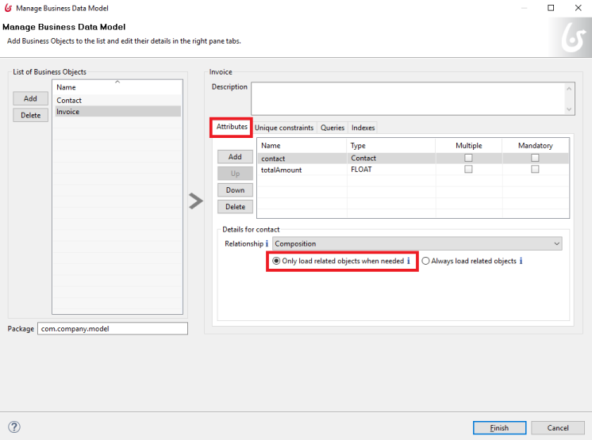

Define and deploy the Business Data Model (BDM)
The business data model is the definition of the business data that is shared by processes and process-based applications in a tenant. This page explains how to define the business data model and how to deploy it. After the model is defined, you can use it to specify the business data used in a process.
Business data model (BDM)
Your business data is the information that is shared between your processes and applications. It is defined as a set of business object in a business data model (BDM). There is one BDM that is used by all processes and applications in a tenant.
:fa-info-circle: A BDM is defined at tenant level. It means you can have different BDM per tenant on the same Bonita platform. See BDM data storage for more information on how to configure a business data model per tenant.
When you define a process, you specify the business objects that are relevant to the process. When a process is instantiated (a case is started), the specified business objects are instantiated as required, becoming variables within the process instance.
You are recommended to use business data instead of process data for any data that has meaning outside of one single process. The business data objects are stored in a database that can be accessed by all applications and processes in a tenant. There is no need to import data from an external system or write it back after a change. The data is automatically stored persistently. It is simple to specify the business objects relevant to a process or task, using Bonita Studio. You can also access a business object programmatically by its data access object (DAO).
To design your BDM, you need to consider the following:
- In a BDM, you create predefined business object definitions that represent key concepts which are manipulated by your processes. For example, Orders, Invoices, and Leave requests are be shared by all processes when running in the Bonita Engine during production.
- A BDM is composed of simple and complex business objects, and the composition and aggregation relationships between them.
- There is one BDM for a tenant, so it must include all the objects needed. Updating a model must be done with care, so that the changes do not cause problems for deployed processes or applications.
- Business objects are instantiated at diagram or process level, not at task or form level.
The BDM specification explains the details of what you must configure in a BDM. Use Bonita Studio to define a BDM.
Business data storage
The business data specified in the BDM is stored in a database. It requires two datasources, BusinessDataDS and NotManagedBizDataDS. When you define the BDM in Bonita Studio, the built-in H2 database and the datasources are created automatically in your development environment.
During development, you can use the tools in the h2-1.3.170.jar in the workspace Tomcat library to view the business data in the h2 database. If you modify database content manually, there is risk of losing data and losing synchronization with business objects in a process instance. However, it can be useful to view the database for debugging processes. If you change the BDM during development, this can also cause problems in existing process definitions.
When you are ready to go to production, you need to configure a database and datasources for business data in your production environment.
BDM specification
A BDM is a structured hierarchy of business objects. It is identified by a package name.
A business object definition consists of the following:
- An object name. This must be a Java class name, because a business object is implemented as a Java class. The fully-qualified object name must be unique.
- Attributes. These are the components of the object. There can be any number of attributes. For each attribute, you can specify:
- A name
- The data type
- The length, when relevant for the data type
- Whether it is mandatory
- Whether the object can contain multiple instances
- Any unique constraints
- A set of default queries, created automatically, and optionally some custom queries
- Indexes for some attributes (optional)
- A
persistenceId, created automatically
Business objects can be combined using composition or aggregation relationships. They are managed using standard create, read, update, delete actions. A business object can be read directly using the Engine Java API specifying the Java DAO, or using the REST API. To read a business object in a Groovy expression, use the DAO. A business object can be updated only in a process, using an operation.
Multiple
In some processes, user interfaces or system activities might need to handle multiple instances of a business object. Use cases include the ability to modify data on mass (for example, approving several leave requests from a list in a user form), and initializing a set of data coming from an external system (for example, loading a list of products from an external datasource and saving each of them in a business object instance).
To support handling of multiple instances of a business objects:
- Specify that a given business data is multiple, using a checkbox in the new business data wizard.
- Use a
java.util.listof objects when accessing multi-instance business data from a Groovy expression. - Set the list of business object instances in an operation using
takes value ofwith a right operand that consists of a list of existing (possibly modified) and new business object instances. - Delete all instances from a list of business object instances with an
Is Deletedoperation.
Unique constraint
An SQL UNIQUE constraint is a single field or a combination of fields that uniquely defines an entry in a database. A unique constraint on a single field means that every entry has a different value for this field. A unique constraint for a combination of fields means that this combination is unique, even though some of the component field values might be common or null.
You can specify a unique constraint for an attribute, to require that every value of the attribute is unique. This means that you can use this attribute in data queries knowing that it is not possible for two entries to have the same value.
Queries
JPQL queries are used to get information about data objects stored in the database. A set of default queries is defined automatically for each object in the BDM. You can also create custom queries.
The default queries are find and find_by queries. There are three types:
- based on unique constraints (which returns a single result)
- based on simple attributes (with = criterion)
- based on Select All (which returns all Business data on the Business Object)
To create a custom query, use the query tab of the Expression editor to write a query script. You can use one of the default queries as an example. A custom query can be on multiple attributes. Only SELECT queries are supported.
To use paged results with a custom query on a business object, you need to define a related query that counts the total number of results that the query would return without paging. The count query name is based on the custom query name; for example, for a query named query1, the count query must be named countForQuery1. For a default query, the count query is created automatically.
When you call a query via the REST API, the relevant count query is automatically called in the background to get the total count, which can be used to calculate the number of pages necessary to retrieve all matching results. The result of the count query is visible in the HTTP response header, in the Content-Range field.
To call a query, use the DAO instance. For a Groovy expression, there is a provided variable that implements the business object DAO class.
Example: When handling business objects in a form, you want to reload business objects from a query and use a Groovy script to repopulate the form accordingly. Suppose that a form shows a list of contracts that can be filtered according to the choice of client in a selection widget. When the user selects a client, this triggers the execution of a business object query, Contracts.findByClient(). A script parses the resulting list of Contracts and repopulates the contract list widget. This scenario requires DAO objects to be called from a Groovy script expression.
Indexes
The purpose of an index is to retrieve data more rapidly. You can specify indexes on business objects to optimize performance of application. For example, for a process to modify purchase orders with an instantiation form used to search for the appropriate purchase order, define an index on purchase order number.
When you view a business object in the Bonita Studio business data model wizard, you can see the attributes that can be indexed. You can define an index on a single attribute or on an ordered list of attributes. An index is automatically created on the PersistenceID, as a primary key. This index is not visible in the BDM wizard. The BDM defines the indexes needed for all applications and processes that use business data. There is no limit to the number of indexes you can define. However, if you define a large number of indexes and have a high volume of business data, it takes longer to build the indexes.
Note: If you are using an Oracle database, do not define an index on a unique constraint attribute. The database creates indexes automatically for unique constraint attributes, so there are problems during execution if you also specify an index on a unique constraint attribute.
In a production environment, indexes are built when a tenant starts or after a new BDM is deployed. In a development environment, indexes are built when Bonita Studio starts and when the Studio BDM wizard is closed.
Composition and aggregation
Composition and aggregation are two ways in which you can define a composite business object that includes relationships with other business objects in the BDM.
- In a composition relationship, a child object cannot exist independently of the parent. The composite business object contains attributes that are business objects. It can also contain attributes with simple data types. For example, a room object that is a child of a house object cannot exist if there is no house object.
- In an aggregation relationship, a child object can exist independently of the parent. The composite business object refers to other business objects, as well as containing simple attributes.
Example: A Purchase Order object consists of a set of primitive attribute variables (such as PO number, client, creation date), and a set of order item objects. The order items have no meaning outside the order, so have a composition relationship with the purchase order. An order item contains a product object and a simple attribute for quantity. The product object has an existence outside the order item (it is used in the product catalog), so has an aggregation relationship with the order item.
In the Bonita Studio BDM wizard, you can specify the objects that are related by composition and aggregation, as well as the simple attributes. A child object can be mandatory or optional. A child object can be multiple, which means that the composite object contains zero or more (if optional) or one or more (if mandatory) instances of the child object. You cannot set a unique constraint on a child object. The default relationship is composition.
When you configure an object in the Bonita Studio BDM wizard, the attribute dropdown list contains the names of the objects that can be included by composition or aggregation. You cannot specify the object you are configuring or its parent.
A composed object is automatically saved to the database using an appropriate schema. For a composition relationship, the child object contains the id of the parent object as a foreign key. For an aggregation relationship, if the child object is not multiple, the parent object contains the id of the child object as a foreign key. If the child object is multiple, the child object ids are stored in a dedicated association table.
When you create a process that uses a business object with a composition or aggregation relationship, treat the object as a typical business object, with the following exceptions:
- A composite object cannot be automatically mapped to page widgets or groups of widgets.
- To set the value of a composite object, either use a Groovy expression or directly assign the value to the child object from an existing class instance.
- You can use getter and setter methods in process or activity operations to set the composed objects as a single instance or as a
java.util.listfor a list of instances. - If your process uses a query from a Groovy expression or uses DAO objects from a client Java application, load the complete composite objects including the child objects.
Loading
There are two options for loading complex business objects, lazy or eager. With lazy loading, the parent object instance is loaded, but child object instances are loaded only when they are needed. With eager loading, child object instances are loaded when the parent object instance is loaded.
The default is lazy loading. You can override this for any business object by configuring it to use eager loading when you specify
the object relationship properties. This means that the specified object and all objects related to it by composition or aggregation
relationships are loaded.
There is an overhead for the additional data load and maintenance of the information in memory, but there is a saving in data access time because the data is already loaded.
Multi-instantiation using business object variables in a list
The list can be a multiple business data variable, a multivalued process variable, or any type of list.
You can use a list business object or variable to create multiple instances of a task. The MultiInstanceIterator reference created at task level uses each item of the list to create an instance of the task.
Define the BDM
You define the BDM using Bonita Studio. It is automatically deployed to the built-in Bonita Engine and available to processes being run from Studio. This means that you can have a different BDM in each Studio during development, which enables you to test the BDM before deploying it in your tenant. However, if you are sharing diagrams and other artifacts in development, you need to synchronize BDM definitions, either by exporting your BDM manually for import into other development systems, or by using a shared repository (not available in the Community edition).
To define the BDM, go to the Bonita Studio Development menu, BDM, and choose Manage. The current BDM definition is displayed. Specify the package name for the BDM in the field below the List of Business Objects.
To add an object:
- Go to the List of Business Objects and click Add.
- The newly created object is added to the list, with a temporary name.
- Click the name of the new object to select it, and specify the name you want to use by typing over the temporary name.
- Then modify the object to specify the details.
To modify a new or existing object:
- Select the object in the List of Business Objects. The details are displayed on the right-hand side of the popup.
- Enter a description for the object. This is optional, but recommended for maintenance and for communicating with other developers using the same BDM.
- In the Attributes tab, specify the attributes of the object. For each attribute:
- Specify a name. This must be unique within the object.
- Specify the type, by clicking on the exiting type and choosing the new type from the drop-down list.
- If the attribute is multi-valued, check the box in the Multiple column.
- If the attribute is mandatory, check the box in the Mandatory column.
- If the attribute is of type String, set the attribute length in the field below the attribute list.
- If the attribute is of type of a BDM object, set type the Relationship (Aggregation or Composition) and the loading configuration (for
lazy, selectOnly load related objects when needed, foreager, selectAlways load related objects)

- In the Unique constraints tab, specify the attributes and sets of attributes that have a uniqueness constraint.
- Click Add to add a constraint. The constraint is added to the list with a temporary name.
- Click the name of the new constraint to select it, and specify the name you want to use by typing over the temporary name.
- Click in the Attribute column of the constraint, and click the icon at the right end of the file to open the Select attributes popup.
- In the popup, check the boxes to select the combination of attributes that must be unique. You can specify a single attribute or a set.
- Click OK to close the popup. The attributes are shown in the constraints list.
- In the Queries tab, you can view the default queries and manage custom queries. To add a custom query:
- Click the Custom radio button.
- Click Add to add a constraint. The query is added to the list with a temporary name.
- Click the name of the new query to select it, and specify the name you want to use by typing over the temporary name.
- Click in the Query column, and click the icon at the right end of the file to open the Create query popup.
- In the popup, specify the query in JPQL. All the parameters used in the query must be specified in the list.
- Select the result type from the drop-down list.
- Click OK to close the popup. The query is saved.
- In the Indexes tab, specify the indexes for the object.
- Click Add to add an index. The index is added to the list with a temporary name.
- Click the name of the new index to select it, and specify the name you want to use by typing over the temporary name.
- Click in the Attribute column of the index, and click the icon at the right end of the file to open the Select attributes popup.
- In the popup, specify the attributes that you want indexed. To specify an attribute to index, select the attribute in the Available attributes list and click Add.
- Use the Add, Remove, Up and Down buttons to specify the index attributes in order.
- Click OK to close the popup. The index is saved.
- Click Finish to save the business data model, which saves all the objects and create BDM database structure. A confirmation dialog will ask to optionally reset BDM database. Reset database is required when changes impact the mandatory or multiple setting for an attribute, a unique constraint, or when a non primitive attribute type is modified.
Export the BDM
There are two ways to export a business data model: in a ZIP file for deployment, or in a BOS file for sharing with other Bonita Studios.
Export the BDM for deployment
To deploy the BDM, you export it as a ZIP file from Bonita Studio and then import it into Bonita Portal.
:fa-exclamation-triangle: Warning: Before deploying the business data model, you must pause the BPM services, so that the update can be performed without affecting ongoing processes. Important: You are recommended Back up your platform and database before deploying a new BDM in case of problems during the update.
Follow these steps:
- In Bonita Studio, open the Development menu in the cool bar.
- Click Business Data Model > Export.
- Select a destination folder.
- Click Export. A file called
bdm.zipis written to the folder that you specified. - Log in to Bonita Portal as the technical user.
- Go to the BPM Services page.
- Click Pause.
- When the BPM services are paused, go to the Business Data Model menu (and, for Efficiency and Performance editions, choose Definition).
- Specify the file containing the business data model that you exported from Bonita Studio.
- Click Activate. A warning is displayed, reminding you that installing this new BDM will overwrite the existing BDM.
- Click on Install to complete the deployment. Bonita Portal loads the file, and retrieves the object definition enabling processes to use them at runtime. It also creates or updates the database schema in the business database, to store business objects appropriately when modified by processes. When the deployment is complete, a message is displayed. If deployment fails, use the Engine logs to analyze the problem.
- Go to the BPM Services page.
- Click Resume. BPM services are resumed.
Warning: the database model is automatically updated when you deploy a new BDM. Avoid changing the database schema manually as it may jeopardize the persistence of business objects and cause errors at process runtime.
Export the BDM to share with another Bonita Studio
The bdm.zip exported from the Bonita Studio Development menu is designed for import into the Portal, and cannot be imported into another Bonita Studio. Instead, create a .bos file, as follows:
- Choose Export from the Diagram menu or click Export in the Cool bar.
- In the popup of exportable items, select only the Business Data Model.
- Specify the filename and location or use the default suggested.
- Click Finish.
The resulting .bos file can be imported into any Bonita Studio with a Subscription license.
Warning: Bonita Studio can contain only one business data model. When you import a .bos file that contains a business data model, it overwrites the model that is already in the Studio.
View the BDM
The BDM ZIP file contains a business object model file, bom.xml. You can open this file in a text editor to view the BDM definition.
Example contents of the bom.xml file:
<?xml version="1.0" encoding="UTF-8" standalone="yes"?>
<businessObjectModel>
<businessObjects>
<businessObject qualifiedName="com.company.model.LeaveRequest">
<fields>
<field id="startDate" type="DATE" nullable="false" length="255" collection="false"/>
<field id="endDate" type="DATE" nullable="false" length="255" collection="false"/>
<field id="returnDate" type="DATE" nullable="false" length="255" collection="false"/>
<field id="daysOff" type="DOUBLE" nullable="false" length="255" collection="false"/>
<field id="leaveType" type="STRING" nullable="false" length="255" collection="false"/>
<field id="approved" type="BOOLEAN" nullable="true" length="255" collection="false"/>
</fields>
<uniqueConstraints/>
<queries>
<query id="query1" content="SELECT l.daysOff
FROM LeaveRequest l
WHERE
l.leaveType = 'Test'" returnType="java.lang.Double">
<queryParameters/>
</query>
</queries>
</businessObject>
</businessObjects>
</businessObjectModel>
Business objects in processes
When you design a process, you specify the variables to be used in the process. These can include variables that are instances of business objects defined in the BDM. You define a business object variable in Bonita Studio in a similar way to defining other process variables.
persistenceID
Each object created in the database has a unique read-only ID called a persistenceID. For each new persistenceID created, the number is incremented. The persistenceID is invisible to the end user in Bonita Portal. A developer can recover this Id by using the method getPersistenceID.
When you declare a persisted business object instance in a process, there are two ways you can initialize it:
- as a new instance: it is created automatically at runtime when the process is instantiated, with the structure defined for the object in the BDM (for example, a process designed to manage employee leave requests will create a new instance of the Leave Request business object). The initial value of each BDM attribute can be set via a groovy script. This way, you may set the process instantiation contract inputs to attributes. Go to Update BDM attributes from contract inputs for more information.
- as an existing instance: the data is loaded by identifying a business object instance that already exists (for example, a process designed to let employees modify unapproved leave requests will modify an existing instance of the Leave Request business object).
After it is declared in the process, a business object instance can be adapted by reading or modifying its data attributes. The Engine will handle the persistence of the modification.
Initialize BDM attributes from process instantiation contract inputs
In the contract definition panel of the Studio (Details panel, Execution tab, Contract pane), you can import contract inputs from a BDM definition using the Add from data… button. It creates a complex input mapping the BDM class attributes (if an attribute is not a primitive Java element, another complex input is created and it goes on).By selecting Auto-generate the initialization script, the default value of the selected business data will be automatically initialized with an auto-generated script when clicking on finish.
If you select No, thanks. I’ll manually define how to use the contract, you will need to create a Groovy script that will set input to BDM attribute.
For instance, with the above com.company.model.LeaveRequest class, using the Add from data… action in the Details panel, Execution tab, Contract pane will create the following complex input :
- leaveRequestInput : COMPLEX
- startDate : DATE
- endDate: DATE
- returnDate: DATE
- daysOff: DECIMAL
- leaveType: TEXT
- approved: BOOLEAN Then, you need to go back to the process variable list (Details panel, Data tab, Parameters pane) and add a new variable of type com.company.model.LeaveRequest or edit an existing one of the com.company.model.LeaveRequest type and click on the Pencil to open the Groovy script editor.
Enter the following code snippet to have a new BDM com.company.model.LeaveRequest instance set with the contract inputs:
var leaveRequest = new com.company.model.LeaveRequest();
leaveRequest.setStartDate(leaveRequestInput.getStartDate());
leaveRequest.setEndDate(leaveRequestInput.getEndDate());
leaveRequest.setReturnDate(leaveRequestInput.getReturnDate());
leaveRequest.setDaysOff(leaveRequestInput.getDaysOff());
leaveRequest.setLeaveType(leaveRequestInput.getLeaveType());
leaveRequest.setApproved(leaveRequestInput.getApproved());
return leaveRequest;
Initialize BDM attributes from contract inputs in task operations
In the case where a business object has to be initialized from task level inputs, you can set contract inputs from the Add from data… action like in previous section and generate automatically operations by selectionning Auto-generate the initialization script. The operations will be generated for business data attributes you selected. You can manage it inside the Details panel, Execution tab, Operations pane.
If you select No, thanks. I’ll manually define how to use the contract or create inputs manually, you can go to operation pane and add a new operation using the Add button.
In the first select box, choose the variable of type com.company.model.LeaveRequest, then, click on Takes value of link and select Instantiate with in Operator type and click OK.
Then, click on the pencil button to open the Edit Expression editor. Choose the Script expression type and enter the same code snippet than the one above to have a new BDM com.company.model.LeaveRequest instance set with the contract inputs.
Business Objects and connectors
You can use business data in a Java program by using the DAO. DAO gives read access to business objects.
:fa-exclamation-triangle: Warning: In a connector, code is executed outside a transaction, so retrieving or updating business data by DAO is not supported.
You can however manipulate the business object outside the connector, and use business objects as connector input or output:
- For a read, retrieve the business object with an expression (for example,
employeeDAO.findByFirstNameAndLastName("William","Jobs"). Then use the object as input to the connector. - For a create or update, return the new or updated business object as output of the connector. Then use the business object (which is stored only in memory at this point) in an operation to update the business object in the business database, persisting the change.
BDM and custom REST APIs
Be aware that a poor implementation of a custom REST API accessing BDM objects can lead to poor performance results. See the best practice on this matter.